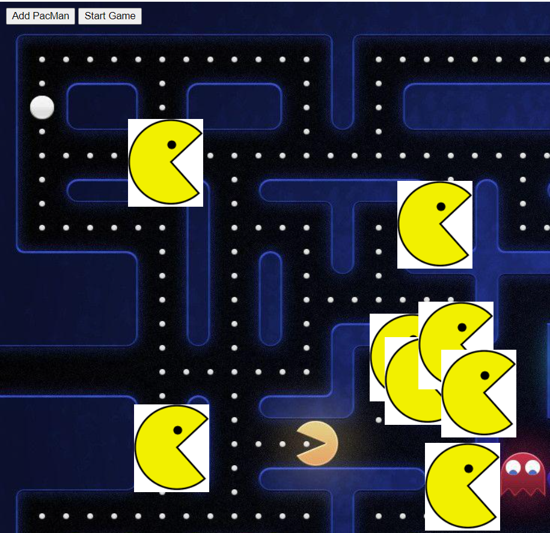
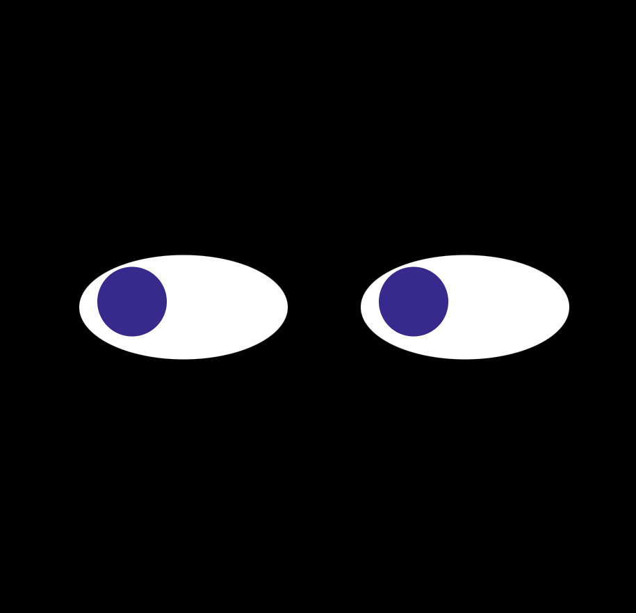
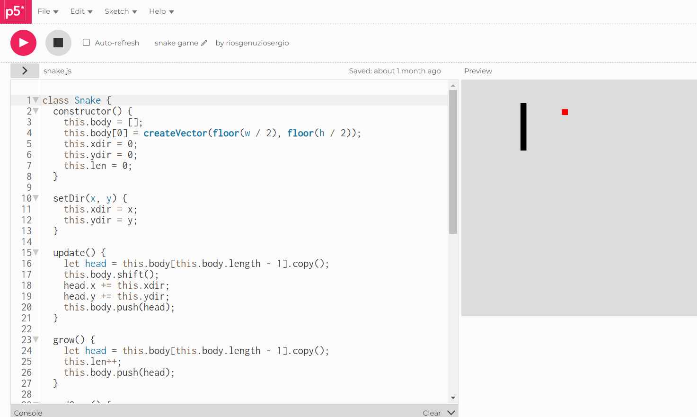
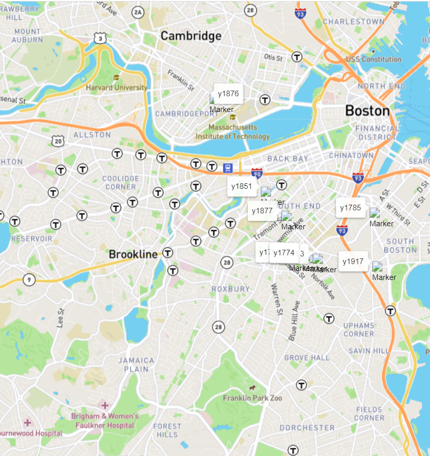

Pacmen
The pacman project was made during one of the weeks of my MIT full stack developer course. This project displays two buttons that releases pacmans and the "Start Game" button makes the pacmans move and each time that same button ir pressed the speed of the objects increases
Github Repository

Follow eyes
The moving eyes project is a really interesting one that uses HTML, CSS and Js to create a pair of eyes that followes the mouse wherever it goes.
Github Repository

Snake
I have created this project with the P5js editor. This is my favorite project because it reminds me of my first ever phone in wich i use to play the famouse game of the snake. I have made this project coding in a object oriented way that it was very fun to made

Bus tracking
This project was made during the ninth week of the MITxpro Full Stack developer course an it is about working with apis. In this case the project you are seeing is a real-time-tracker that shows the stops between the MIT and Harvard.
Github Repository